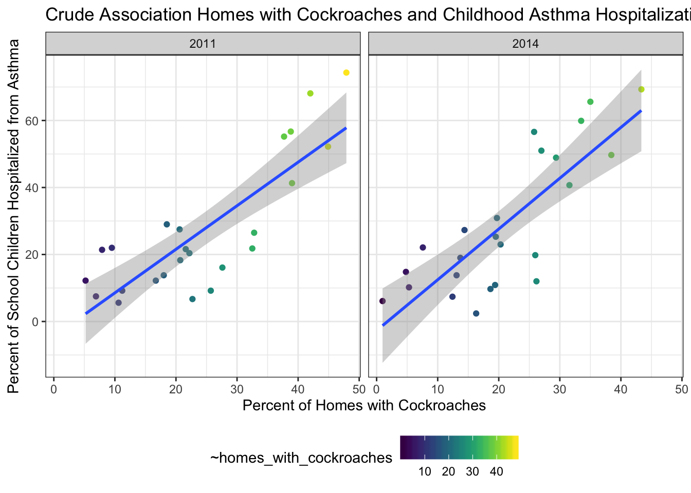

all_available_data=
read_csv(file="./final_data/all_available_data.csv")## Parsed with column specification:
## cols(
## unique_id = col_double(),
## indicator_id = col_double(),
## name = col_character(),
## measure = col_character(),
## geo_type_name = col_character(),
## geo_join_id = col_double(),
## geo_place_name = col_character(),
## time_period = col_character(),
## start_date = col_date(format = ""),
## data_value = col_double(),
## message = col_character(),
## confidence_interval = col_logical()
## )## Warning: 42367 parsing failures.
## row col expected actual file
## 5332 confidence_interval 1/0/T/F/TRUE/FALSE (38.1, 45.8) './final_data/all_available_data.csv'
## 5334 confidence_interval 1/0/T/F/TRUE/FALSE (29.7, 35.1) './final_data/all_available_data.csv'
## 5336 confidence_interval 1/0/T/F/TRUE/FALSE (21.5, 27.5) './final_data/all_available_data.csv'
## 5338 confidence_interval 1/0/T/F/TRUE/FALSE (30.9, 37.1) './final_data/all_available_data.csv'
## 5340 confidence_interval 1/0/T/F/TRUE/FALSE (28.2, 38.4) './final_data/all_available_data.csv'
## .... ................... .................. ............ .....................................
## See problems(...) for more details.Asthma_data=
read_csv(file="./final_data/asthma_data.csv")## Parsed with column specification:
## cols(
## indicator_data_id = col_double(),
## indicator_id = col_double(),
## name = col_character(),
## Measure = col_character(),
## geo_type_name = col_character(),
## geo_entity_id = col_double(),
## year_description = col_double(),
## data_value = col_character(),
## message = col_character()
## )## Warning: 3486 parsing failures.
## row col expected actual file
## 5167 year_description a double Annual Average 2009 './final_data/asthma_data.csv'
## 5168 year_description a double Annual Average 2009 './final_data/asthma_data.csv'
## 5169 year_description a double Annual Average 2009 './final_data/asthma_data.csv'
## 5170 year_description a double Annual Average 2009 './final_data/asthma_data.csv'
## 5171 year_description a double Annual Average 2009 './final_data/asthma_data.csv'
## .... ................ ........ ................... ..............................
## See problems(...) for more details.mold_data=
read_csv(file="./final_data/mold_home.csv")## Parsed with column specification:
## cols(
## indicator_data_id = col_double(),
## indicator_id = col_double(),
## name = col_character(),
## Measure = col_character(),
## geo_type_name = col_character(),
## geo_entity_id = col_double(),
## year_description = col_double(),
## data_value = col_character(),
## message = col_character()
## )## Warning: 378 parsing failures.
## row col expected actual file
## 1975 year_description no trailing characters -2013 './final_data/mold_home.csv'
## 1976 year_description no trailing characters -2013 './final_data/mold_home.csv'
## 1977 year_description no trailing characters -2013 './final_data/mold_home.csv'
## 1978 year_description no trailing characters -2013 './final_data/mold_home.csv'
## 1979 year_description no trailing characters -2013 './final_data/mold_home.csv'
## .... ................ ...................... ...... ............................
## See problems(...) for more details.library(car)## Loading required package: carData##
## Attaching package: 'car'## The following object is masked from 'package:dplyr':
##
## recode## The following object is masked from 'package:purrr':
##
## sometidy_asthma =
read_csv(file = "./final_data/tidy_asthma.csv")## Parsed with column specification:
## cols(
## geo_type_name = col_character(),
## geo_join_id = col_double(),
## time_period = col_double(),
## geo_place_name = col_character(),
## homes_with_cockroaches = col_double(),
## poverty = col_double(),
## public_school_children_5_14_yrs_old_with_asthma = col_double(),
## public_school_children_5_14_yrs_old_with_persistent_asthma = col_double(),
## asthma_hospitalizations_children_5_to_17_yrs_old = col_double()
## )tidy_asthma ## # A tibble: 188 x 9
## geo_type_name geo_join_id time_period geo_place_name homes_with_cock…
## <chr> <dbl> <dbl> <chr> <dbl>
## 1 Borough 1 2011 Bronx 37.7
## 2 Borough 2 2011 Brooklyn 26.6
## 3 Borough 3 2011 Manhattan 20.6
## 4 Borough 4 2011 Queens 19.7
## 5 Borough 5 2011 Staten Island 5.2
## 6 Borough 1 2014 Bronx 35
## 7 Borough 2 2014 Brooklyn 26.4
## 8 Borough 3 2014 Manhattan 19.7
## 9 Borough 4 2014 Queens 19.3
## 10 Borough 5 2014 Staten Island 4.8
## # … with 178 more rows, and 4 more variables: poverty <dbl>,
## # public_school_children_5_14_yrs_old_with_asthma <dbl>,
## # public_school_children_5_14_yrs_old_with_persistent_asthma <dbl>,
## # asthma_hospitalizations_children_5_to_17_yrs_old <dbl>pp = tidy_asthma %>%
mutate(
geo_join_id = as.numeric(geo_join_id) ) %>%
ggplot(aes(x = geo_join_id, y = homes_with_cockroaches)) +
geom_point(aes(colour = time_period), alpha = 0.5) +
labs(title = "Prevalence of Cockroaches in Different Neighborhoods",
x = 'Geo_ID',
y = 'Rate of Homes with Cockroaches(%)'
)
#pp
# gganimate parts
#pp + transition_time(time_period) + labs(title="Year:{frame_time}")
#animate(pp, fps = 2, height = 600, width = 1000)test_prev=
tidy_asthma %>%
drop_na(homes_with_cockroaches) %>%
mutate(
geo_join_id=as.numeric(geo_join_id),
time_period=as.factor(time_period),
time_period=fct_relevel(time_period, "2011"="2011", "2012"="2012", "2013" = "2013", "2014" = "2014")
) %>%
arrange(geo_join_id) %>%
plot_ly(
x=~geo_join_id,
y=~homes_with_cockroaches,
color=~geo_join_id,
frame=~ time_period,
hoverinfo= "text",
type="scatter",
mode="markers"
)## Warning: Unknown levels in `f`: 2012, 2013test_prev## see changes with Hospitalzation by time
set.seed(10)
library(ggplot2)
tidy_asthma=
read_csv(file="./final_data/tidy_asthma.csv")## Parsed with column specification:
## cols(
## geo_type_name = col_character(),
## geo_join_id = col_double(),
## time_period = col_double(),
## geo_place_name = col_character(),
## homes_with_cockroaches = col_double(),
## poverty = col_double(),
## public_school_children_5_14_yrs_old_with_asthma = col_double(),
## public_school_children_5_14_yrs_old_with_persistent_asthma = col_double(),
## asthma_hospitalizations_children_5_to_17_yrs_old = col_double()
## )ggplot_data =
tidy_asthma %>%
filter(time_period == c("2011", "2014"))
plot_tidy =
ggplot(ggplot_data, aes(x = homes_with_cockroaches, y = asthma_hospitalizations_children_5_to_17_yrs_old, color = homes_with_cockroaches)) +
geom_point() +
geom_smooth(method = "lm") +
facet_grid(~time_period) +
labs(x = "Percent of Homes with Cockroaches",
y = "Percent of School Children Hospitalized from Asthma",
title = "Crude Association Homes with Cockroaches and Childhood Asthma Hospitalization") +
viridis::scale_color_viridis(aes(color = homes_with_cockroaches), discrete = FALSE)
plot_tidy
test_prev=
tidy_asthma %>%
drop_na(asthma_hospitalizations_children_5_to_17_yrs_old) %>%
mutate(
geo_join_id=as.character(geo_join_id),
time_period = as.numeric(levels(time_period)) [time_period]
) %>%
arrange(geo_join_id) %>%
plot_ly(
x=~geo_join_id,
y=~asthma_hospitalizations_children_5_to_17_yrs_old,
color=~geo_join_id,
frame=~ time_period,
hoverinfo= "text",
type="scatter",
mode="markers"
)
test_prev## Warning in RColorBrewer::brewer.pal(N, "Set2"): n too large, allowed maximum for palette Set2 is 8
## Returning the palette you asked for with that many colors
## Warning in RColorBrewer::brewer.pal(N, "Set2"): n too large, allowed maximum for palette Set2 is 8
## Returning the palette you asked for with that many colors#set seed for reproducibility
set.seed(10)
#fitting the full model
tidy_asthma =
read_csv(file = "./final_data/tidy_asthma.csv")## Parsed with column specification:
## cols(
## geo_type_name = col_character(),
## geo_join_id = col_double(),
## time_period = col_double(),
## geo_place_name = col_character(),
## homes_with_cockroaches = col_double(),
## poverty = col_double(),
## public_school_children_5_14_yrs_old_with_asthma = col_double(),
## public_school_children_5_14_yrs_old_with_persistent_asthma = col_double(),
## asthma_hospitalizations_children_5_to_17_yrs_old = col_double()
## )test=
tidy_asthma %>%
filter(time_period == c("2011", "2014"))
## Model 0 -- crude
model0_fit = lm(public_school_children_5_14_yrs_old_with_asthma ~ homes_with_cockroaches, data=test) %>% broom::tidy()
## Model 1
model1_fit = lm(public_school_children_5_14_yrs_old_with_asthma ~ homes_with_cockroaches + poverty + geo_join_id + time_period, data=test) %>% broom::tidy()
model1_fit## # A tibble: 4 x 5
## term estimate std.error statistic p.value
## <chr> <dbl> <dbl> <dbl> <dbl>
## 1 (Intercept) 26.6 11.3 2.35 0.0294
## 2 homes_with_cockroaches 0.383 0.534 0.717 0.482
## 3 poverty 0.818 0.637 1.28 0.214
## 4 geo_join_id 0.0157 0.0229 0.683 0.502## Model 2
model2_fit = lm(public_school_children_5_14_yrs_old_with_asthma ~ homes_with_cockroaches * poverty * geo_join_id*time_period, data=test) %>% broom::tidy()
# Looking at residuals -- FAILED
#residual_0=
#model0_fit %>%
#modelr::add_residuals(test, model0_fit) %>%
#ggplot(aes(x=public_school_children_5_14_yrs_old_with_asthma, y=resid)) +geom_point()
#residual_1=
#modelr::add_residuals(test, model1_fit) %>%
#ggplot(aes(x = public_school_children_5_14_yrs_old_with_asthma, y = resid)) + geom_point()
#residual_2=
#modelr::add_residuals(tidy_asthma, model2_fit) %>%
#ggplot(aes(x = public_school_children_5_14_yrs_old_with_asthma, y = resid)) + geom_point()cv_df=
crossv_mc(tidy_asthma, 100) %>%
mutate(
train=map(train, as_tibble),
test = map(test, as_tibble)
)
#cv_df=
# cv_df %>%
#mutate(fit = map(train, ~lm(public_school_children_5_14_yrs_old_with_asthma ~ ., data=.x)),
# model1_lm= map(train, ~lm(public_school_children_5_14_yrs_old_with_asthma ~ homes_with_cockroaches + poverty + geo_join_id, data=.x)),
# model2_lm=map(train, ~lm(public_school_children_5_14_yrs_old_with_asthma ~ homes_with_cockroaches * poverty * geo_join_id, data=.x)),
# model5_lm=map(train, ~lm(public_school_children_5_14_yrs_old_with_asthma ~ homes_with_cockroaches * poverty * geo_join_id * asthma_hospitalizations_children_5_to_17_yrs_old, data=.x))) %>%
# mutate(rmse_fit = map2_dbl(fit, test, ~rmse(model=.x, data=.y)),
# rmse_model1= map2_dbl(model1_lm, test, ~rmse(model=.x, data=.y)),
# rmse_model2= map2_dbl(model2_lm, test, ~rmse(model=.x, data=.y)),
# rmse_model5=map2_dbl(model5_lm, test, ~rmse(model=.x, data=.y)))library(car)
tidy_asthma =
read_csv(file = "./final_data/tidy_asthma.csv")## Parsed with column specification:
## cols(
## geo_type_name = col_character(),
## geo_join_id = col_double(),
## time_period = col_double(),
## geo_place_name = col_character(),
## homes_with_cockroaches = col_double(),
## poverty = col_double(),
## public_school_children_5_14_yrs_old_with_asthma = col_double(),
## public_school_children_5_14_yrs_old_with_persistent_asthma = col_double(),
## asthma_hospitalizations_children_5_to_17_yrs_old = col_double()
## )tidy_asthma ## # A tibble: 188 x 9
## geo_type_name geo_join_id time_period geo_place_name homes_with_cock…
## <chr> <dbl> <dbl> <chr> <dbl>
## 1 Borough 1 2011 Bronx 37.7
## 2 Borough 2 2011 Brooklyn 26.6
## 3 Borough 3 2011 Manhattan 20.6
## 4 Borough 4 2011 Queens 19.7
## 5 Borough 5 2011 Staten Island 5.2
## 6 Borough 1 2014 Bronx 35
## 7 Borough 2 2014 Brooklyn 26.4
## 8 Borough 3 2014 Manhattan 19.7
## 9 Borough 4 2014 Queens 19.3
## 10 Borough 5 2014 Staten Island 4.8
## # … with 178 more rows, and 4 more variables: poverty <dbl>,
## # public_school_children_5_14_yrs_old_with_asthma <dbl>,
## # public_school_children_5_14_yrs_old_with_persistent_asthma <dbl>,
## # asthma_hospitalizations_children_5_to_17_yrs_old <dbl>ggplot_data =
tidy_asthma %>%
filter(time_period == c("2011", "2014"))
linear_model =
lm(public_school_children_5_14_yrs_old_with_asthma ~ homes_with_cockroaches * poverty * time_period * geo_join_id, data = ggplot_data) %>%
broom::glance()
layout(matrix(c(1,2,3,4),2,2))
plot(linear_model)